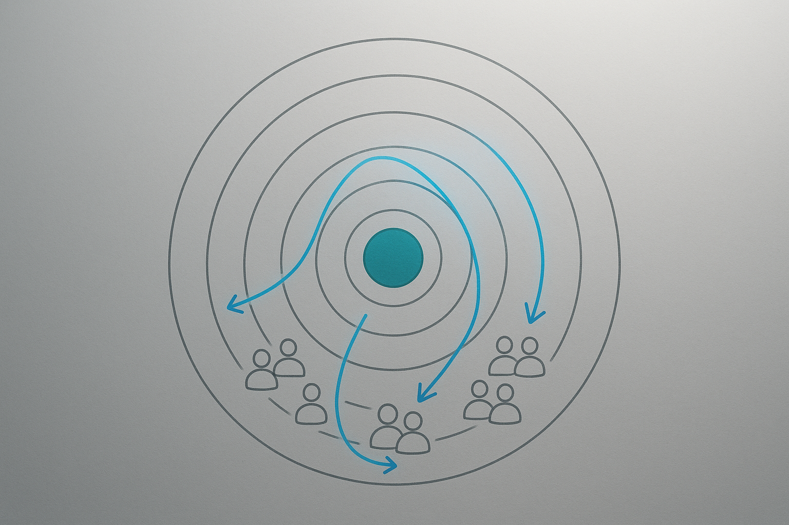

<!DOCTYPE html>
<html lang="en">
<head>
    <meta charset="utf-8" />
    <meta name="viewport" content="width=device-width, initial-scale=1" />
    <title>If I’ve got one more dollar to spend, do I put it into loyalty, retail media, or collab‑driven reach? | Signal-Driven Brand Collaborations</title>
    <style>
        :root {
            --bg: #f8f8f2;
            --paper: #ffffff;
            --text: #1b1f2b;
            --muted: #6c7283;
            --accent: #0a4c6a;
            --border: #ebedf5;
            --mono: "IBM Plex Mono", "SFMono-Regular", Consolas, "Liberation Mono", Menlo, monospace;
            --serif: "Source Serif 4", "Spectral", Georgia, "Times New Roman", serif;
            --sans: "Source Sans 3", "Inter", -apple-system, BlinkMacSystemFont, "Segoe UI", Helvetica, Arial, sans-serif;
            --font-base: clamp(1rem, 0.94rem + 0.3vw, 1.15rem);
            --line-base: 1.7;
            --h1: clamp(2.2rem, 1.6rem + 1.2vw, 3rem);
            --h2: clamp(1.4rem, 1.2rem + 0.4vw, 1.65rem);
            --h3: clamp(1.15rem, 1.05rem + 0.2vw, 1.35rem);
        }

        * { box-sizing: border-box; }

        body {
            margin: 0;
            background: var(--bg);
            font-family: var(--sans);
            color: var(--text);
            line-height: var(--line-base);
            font-size: var(--font-base);
        }

        .page {
            max-width: 860px;
            margin: 0 auto;
            padding: 48px 24px 72px;
        }

        header {
            background: var(--paper);
            padding: 48px;
            border-radius: 24px;
            box-shadow: 0 18px 60px rgba(13, 21, 45, 0.08);
            border: 1px solid var(--border);
        }

        h1 {
            font-family: var(--serif);
            font-size: var(--h1);
            margin: 0 0 12px;
            line-height: 1.2;
        }

        h2, h3, h4 {
            font-family: var(--serif);
            margin-top: 48px;
            margin-bottom: 12px;
            line-height: 1.25;
        }

        p {
            margin: 0 0 20px;
            font-size: var(--font-base);
        }

        .subtitle {
            font-size: 1.15rem;
            color: var(--muted);
            margin-bottom: 18px;
        }

        .meta {
            display: flex;
            flex-wrap: wrap;
            gap: 16px 32px;
            margin-top: 24px;
            padding-top: 20px;
            border-top: 1px solid var(--border);
        }

        .meta-item {
            min-width: 160px;
        }

        .meta-label {
            text-transform: uppercase;
            letter-spacing: 0.08em;
            font-size: 0.75rem;
            color: var(--muted);
        }

        .meta-value {
            font-size: 1rem;
            margin-top: 4px;
        }

        .updated {
            margin-top: 32px;
            font-size: 0.9rem;
            color: var(--muted);
        }

        .hero-figure {
            margin: 28px 0 0;
            border-radius: 24px;
            overflow: hidden;
            border: 1px solid var(--border);
            box-shadow: 0 24px 70px rgba(13, 21, 45, 0.09);
            background: #000;
        }

        .hero-figure img {
            width: 100%;
            display: block;
            object-fit: cover;
            max-height: 480px;
        }

        .hero-figure figcaption {
            padding: 16px 28px;
            font-size: 0.95rem;
            color: var(--muted);
            background: var(--paper);
        }

        .hero-meta {
            display: flex;
            flex-wrap: wrap;
            gap: 12px 24px;
            margin-top: 12px;
            font-size: 0.85rem;
            text-transform: uppercase;
            letter-spacing: 0.08em;
            color: var(--muted);
        }

        .hero-meta span strong {
            display: block;
            color: var(--text);
            font-size: 0.95rem;
            letter-spacing: 0;
            text-transform: none;
        }

        .inline-visual {
            margin: 36px 0;
            border: 1px solid var(--border);
            border-radius: 20px;
            overflow: hidden;
            background: var(--paper);
            box-shadow: 0 16px 40px rgba(13, 21, 45, 0.07);
        }

        .inline-visual img {
            width: 100%;
            display: block;
            object-fit: cover;
        }

        .inline-visual figcaption {
            padding: 18px 24px 22px;
        }

        .inline-visual .label {
            font-size: 0.85rem;
            text-transform: uppercase;
            letter-spacing: 0.08em;
            color: var(--muted);
        }

        .inline-visual .description {
            font-size: 1rem;
            margin-top: 6px;
            color: var(--text);
        }

        .inline-visual .metrics {
            margin-top: 14px;
            display: flex;
            flex-wrap: wrap;
            gap: 8px;
        }

        .inline-visual .metrics span {
            font-size: 0.8rem;
            text-transform: uppercase;
            letter-spacing: 0.08em;
            border: 1px solid var(--border);
            padding: 4px 8px;
            border-radius: 999px;
            color: var(--muted);
            background: rgba(10, 76, 106, 0.04);
        }

        .inline-visual .metrics-focus {
            margin-top: 8px;
            font-size: 0.85rem;
            color: var(--muted);
        }

        main {
            margin-top: 42px;
            background: var(--paper);
            padding: 48px;
            border-radius: 24px;
            border: 1px solid var(--border);
            box-shadow: 0 24px 70px rgba(13, 21, 45, 0.07);
        }

        main h2 {
            font-size: var(--h2);
            border-bottom: 1px solid var(--border);
            padding-bottom: 12px;
        }

        blockquote {
            border-left: 4px solid var(--accent);
            padding-left: 18px;
            margin: 24px 0;
            color: var(--accent);
            font-style: italic;
            background: rgba(10, 76, 106, 0.04);
        }

        code, pre {
            font-family: var(--mono);
            background: #f3f5fa;
            border: 1px solid var(--border);
            border-radius: 8px;
        }

        pre {
            padding: 18px;
            overflow-x: auto;
        }

        table {
            width: 100%;
            border-collapse: collapse;
            margin: 32px 0;
        }

        th, td {
            border: 1px solid var(--border);
            padding: 12px;
            text-align: left;
            font-size: 0.95rem;
        }

        th {
            background: rgba(10, 76, 106, 0.06);
            font-weight: 600;
        }

        ul, ol {
            margin: 0 0 24px 20px;
        }

        a {
            color: var(--accent);
            text-decoration: none;
            border-bottom: 1px solid rgba(10, 76, 106, 0.2);
        }

        a:hover {
            border-bottom-color: var(--accent);
        }

        .image-gallery {
            margin-top: 52px;
        }

        .image-gallery h3 {
            font-family: var(--serif);
            font-size: 1.15rem;
            margin-bottom: 18px;
            color: var(--heading);
        }

        .image-grid {
            display: grid;
            grid-template-columns: repeat(auto-fit, minmax(220px, 1fr));
            gap: 24px;
        }

        .image-grid figure {
            background: var(--paper);
            border: 1px solid var(--border);
            border-radius: 18px;
            overflow: hidden;
            box-shadow: 0 14px 38px rgba(13, 21, 45, 0.08);
        }

        .image-grid img {
            width: 100%;
            display: block;
            object-fit: cover;
            height: 200px;
        }

        .image-grid figcaption {
            padding: 14px 18px 18px;
        }

        .image-grid .label {
            font-size: 0.85rem;
            text-transform: uppercase;
            letter-spacing: 0.08em;
            color: var(--muted);
        }

        .image-grid .description {
            font-size: 0.95rem;
            margin-top: 6px;
            color: var(--text);
        }

        @media (max-width: 640px) {
            .page {
                padding: 32px 16px;
            }

            header, main {
                padding: 32px 20px;
            }

            h1 {
                font-size: 1.8rem;
            }

            .meta {
                flex-direction: column;
            }

            .hero-figure figcaption {
                padding: 12px 18px;
            }
        }
    </style>
</head>
<body>
    <div class="page">
        <header>
            <div class="tagline">Signal-Driven Brand Collaborations</div>
            <h1>If I’ve got one more dollar to spend, do I put it into loyalty, retail media, or collab‑driven reach?</h1>
            <div class="subtitle">If I’ve got one more dollar to spend, do I put it into loyalty, retail media, or collab‑driven reach?</div>
            <div class="meta">
                
                    <div class="meta-item">
                        <div class="meta-label">Window</div>
                        <div class="meta-value">2025-11-18 → 2025-12-02</div>
                    </div>
                
                    <div class="meta-item">
                        <div class="meta-label">Read time</div>
                        <div class="meta-value">~21 min read</div>
                    </div>
                
                    <div class="meta-item">
                        <div class="meta-label">Confidence</div>
                        <div class="meta-value">Directional</div>
                    </div>
                
                    <div class="meta-item">
                        <div class="meta-label">Region</div>
                        <div class="meta-value">US</div>
                    </div>
                
            </div>
            
            <div class="updated">Updated Dec 02, 2025</div>
            
        </header>
        
        <figure class="hero-figure">
            
            <figcaption>Choose whether the extra dollar preserves margin by targeting top loyalty members or buys reach via collab/retail media during the early holiday window. Deliberately presses a single card labeled &#34;$1 credit — top decile&#34; into a launch position while glancing at a printed matched-collab plan. Precise, decisive, measurement-first</figcaption>
        </figure>
        
        <div class="hero-meta">
            
            <span>Window <strong>2025-11-18 → 2025-12-02</strong></span>
            
            <span>Read <strong>~21 min read</strong></span>
            
            <span>Confidence <strong>Directional</strong></span>
            
        </div>
        
        
        <main>
            <h1 id="if-ive-got-one-more-dollar-to-spend-do-i-put-it-into-loyalty-retail-media-or-collabdriven-reach">If I’ve got one more dollar to spend, do I put it into loyalty, retail media, or collab‑driven reach?</h1>
<p><em>Query</em>: If I’ve got one more dollar to spend, do I put it into loyalty, retail media, or collab‑driven reach?</p>
<h3 id="fast-stack">Fast Stack</h3>
<ul>
<li><strong>Headline:</strong> Test a collab-led holiday that pairs a targeted <strong>$1</strong> loyalty credit with a collab SKU promoted via retail media and store media. This preserves margin while using capture mechanics to turn trial into repeat.</li>
<li><strong>Why now:</strong> The Nov 18 – Dec 02 window is the early holiday stretch where early-window share can be shifted before headline discounts deepen demand.</li>
<li><strong>Next 30 days:</strong> Launch a two-week pilot owned by a single cross-functional lead: activate the top-decile $1 credit, field the collab SKU with QR capture, and run daily readouts on visits, margin per visit, and CPA.</li>
</ul>
<h2 id="fast-path">Fast Path</h2>
<h3 id="executive-take">Executive Take</h3>
<p>You must decide whether one additional dollar goes to loyalty, retail media, or collab-driven reach to lift early-window foot traffic and lower event CPA in the Nov 18 – Dec 02, 2025 holiday window without deepening blanket discounts. This matters because the plan must deliver <strong>10–15%</strong> base foot-traffic uplift (stretch <strong>≥25%</strong>), move current early-window share from <strong>12–15%</strong> toward <strong>20–30%</strong>, and keep event CPA at or below <strong>≤0.80×</strong> baseline to justify spend <sup id="fnref:7"><a class="footnote-ref" href="#fn:7">7</a></sup><sup id="fnref:4"><a class="footnote-ref" href="#fn:4">4</a></sup>. Favor a collab-led holiday paired with a targeted loyalty microcredit: use the $1 to activate top-decile members while running a collab SKU with in-store capture so trial converts to repeat <sup id="fnref2:7"><a class="footnote-ref" href="#fn:7">7</a></sup><sup id="fnref2:4"><a class="footnote-ref" href="#fn:4">4</a></sup>. In the next 30 days, cross-functional teams must launch a two-week pilot (Nov 18–Dec 02), instrument daily incremental visits, incremental spend per visit, and contribution margin by treatment, and use foot-traffic uplift, early-window share, and event CPA as pass/fail metrics <sup id="fnref:5"><a class="footnote-ref" href="#fn:5">5</a></sup>.</p>
<h3 id="highlights">Highlights</h3>
<ul>
<li>Loyalty-targeted credits buy higher margin per visit; prioritize top-decile members for a $1 credit to protect contribution margin.</li>
<li>Collab activations drive new-buyer reach quickly but need an in-store capture (QR + loyalty link) to lift repeat rates.</li>
<li>Retail media amplifies reach for the collab SKU efficiently and reduces event CPA when creative and store media are tightly coordinated.</li>
</ul>
<h3 id="top-operator-moves">Top Operator Moves</h3>
<ul>
<li>Deploy a <strong>$1</strong> loyalty credit to top-decile customers for Nov 18–Dec 02 and measure incremental visits and margin per visit.</li>
<li>Activate a collab SKU with in-store QR capture and tie redemptions to loyalty IDs; track QR redemptions as a share of footfall and repeat conversion.</li>
<li>Allocate the incremental retail media dollar to promote the collab SKU in geo-fenced, high-intent placements and measure event CPA daily.</li>
</ul>
<h3 id="plays">Plays</h3>
<ul>
<li><strong>Paired $1 loyalty credit + collab SKU with in-store capture</strong> — Foot-traffic uplift meets <strong>10–15%</strong> base (stretch <strong>≥25%</strong>), early-window share moves toward <strong>20–30%</strong>, and event CPA is <strong>≤0.80×</strong> baseline.</li>
</ul>
<hr>
<h2 id="for-operators-and-collab-leads">For operators and collab leads</h2>
<p><em>Spine:</em> What: Early-window lifts come from engaged loyalty and collab-driven reach. | Proof: Success = incremental early-window visits per $1 that lift early-window buyer share to 20%+ while holding event CPA ≤0.8× baseline and QR redemptions ≥5% of footfall. | Move: In-store media plus QR capture ties reach to footfall and shortens CPA.</p>
<h2 id="signal-map">Signal Map</h2>
<figure class="inline-visual"><figcaption><div class="label">Signal Map</div><div class="description">Concentric rings with inner loyalty core, middle retail media band, outer collab reach lattice. Quant anchors placed in ring segments: inner ring annotated 12–15% current early-window share, goal 20–30%; outer arc labels footfall uplift base 10–15% and stretch ≥25%. Composition cues: isometric view, textured paper material for rings.</div><div class="metrics"><span>Foot-traffic uplift</span><span>Early-window share</span><span>Event CPA</span></div><div class="metrics-focus">Focus: Foot-traffic uplift · Early-window share · Event CPA</div></figcaption></figure>

<h2 id="measurement-spine">Measurement Spine</h2>
<h3 id="anchors">Anchors</h3>
<ul>
<li><strong>Incremental early-window visits per $1:</strong> Measure (Visits_treatment - Visits_control) / Spend_treatment for each $1 treatment arm using M1. No absolute per-dollar target provided; use relative ranking across arms. (Growth)</li>
<li><strong>Event CPA (incremental) guardrail:</strong> Ceiling: Event CPA should be (Finance)</li>
<li><strong>QR redemption rate vs footfall guardrail:</strong> 5 percent (Retail Ops)</li>
<li><strong>Foot traffic uplift vs baseline:</strong> Base goal 10 15% uplift; stretch 25% uplift per Unified Target Pack. (Head of Retail)</li>
<li><strong>Early-window buyer share:</strong> Increase early-window buyer share from ~12 15% current to 20 30% in the window. (Head of Marketing)</li>
</ul>
<h3 id="measurement-plan">Measurement Plan</h3>
<ul>
<li><strong>Incremental Early-Window Visits Per $1 By Channel</strong> (Growth, Nov 18 – Dec 02, 2025) — (Visits_treatment − Visits_control) / Spend_treatment; run per-dollar test for: 1) $1 loyalty credit, 2) $1 retail media CPM-equivalent, 3) $1 collab reach spend
  Why it matters: Directly answers which $1 buys more early-window visits while limiting blanket discounts.</li>
<li><strong>Event Cpa (Incremental)</strong> (Finance, Nov 18 – Dec 02, 2025 (plus 7-day attribution)) — Spend_on_treatment / Incremental_buyers_at_event_window; compare to baseline CPA and target ≤0.8×
  Why it matters: Ensures the chosen dollar does not raise acquisition cost above target ceiling.</li>
<li><strong>Qr Redemption Rate Vs Footfall</strong> (Retail Ops, Nov 18 – Dec 02, 2025) — QR_scans_at_store / Total_store_visits; aim ≥5% of footfall from QR redemptions in pilot stores
  Why it matters: Tracks conversion lift from collab in-store activation without blanket discounts.</li>
<li><strong>Buyer Activity Share Vs Promo Intensity (Paired Metric)</strong> (Analytics, Baseline 2 weeks prior and Nov 18 – Dec 02 window) — Weekly buyer share by cohort / Promo intensity index (headline discount depth × reach); report side-by-side to detect dilution or dependence
  Why it matters: Shows whether share gains come from marginal buyers or from deeper discounting; guides whether to scale channel.
  Note: Buyer activity share in the early window is tracked separately from SKU promo share to protect margin while growing participation.</li>
</ul>
<h2 id="deep-analysis">Deep Analysis</h2>
<h3 id="early-window-returns-concentrate-on-engaged-customers-early-window-lifts-come-from-engaged-loyalty-and-collab-driven-reach">Early-window returns concentrate on engaged customers: Early-window lifts come from engaged loyalty and collab-driven reach.</h3>
<p>Early-window foot-traffic and sales lift is concentrated among emotionally engaged loyalty members and during high-touch collab activations<sup id="fnref3:7"><a class="footnote-ref" href="#fn:7">7</a></sup><sup id="fnref3:4"><a class="footnote-ref" href="#fn:4">4</a></sup>. Emotional connection multiplies visits and sales for loyalty members, while collabs drive fast trial but convert primarily through one-time trial mechanics unless tied into repeat engines<sup id="fnref4:7"><a class="footnote-ref" href="#fn:7">7</a></sup><sup id="fnref4:4"><a class="footnote-ref" href="#fn:4">4</a></sup>. That means loyalty spend buys higher margin-per-visit; collab spend buys reach and new-buyer share but often needs additional mechanics to turn trial into repeat<sup id="fnref2:5"><a class="footnote-ref" href="#fn:5">5</a></sup>.
<em>Operator note:</em> Prioritize the extra dollar where it preserves contribution margin and reliably shifts early-window share. Start by targeting a $1 credit at top decile loyalty members for Nov18–Dec02, and run a matched collab activation that includes an in-store capture mechanic. Compare incremental visits and margin per visit rather than raw redemption counts.
<em>Instrument next:</em> Instrument early-window incremental visits, incremental spend per visit, and contribution margin segmented by treatment: loyalty-targeted $1 credit vs collab media spend, measured daily.</p>
<h3 id="targeted-credits-change-discounting-math-targeted-credits-reduce-headline-discount-depth-and-lower-event-cpa">Targeted credits change discounting math: Targeted credits reduce headline discount depth and lower event CPA.</h3>
<p>Reallocating spend from blanket discounts to targeted loyalty credits reduces headline discount depth while raising visits among high-LTV segments<sup id="fnref3:5"><a class="footnote-ref" href="#fn:5">5</a></sup><sup id="fnref5:7"><a class="footnote-ref" href="#fn:7">7</a></sup>. Concentrating small credits on identified repeat prospects increases share-of-wallet and keeps average discount per incremental visit lower than mass promotions; retail media without targeting can expand reach but often raises CPA and compresses contribution margin if attribution is weak<sup id="fnref4:5"><a class="footnote-ref" href="#fn:5">5</a></sup><sup id="fnref6:7"><a class="footnote-ref" href="#fn:7">7</a></sup>. Collab activations can boost early-window buyer acquisition but will skew discount math if you need to run sampling or temporary price cuts to secure trial<sup id="fnref5:4"><a class="footnote-ref" href="#fn:4">4</a></sup>.
<em>Operator note:</em> Do not treat dollar-for-dollar media and loyalty as interchangeable. Run a three-arm micro-test: (A) $1 targeted loyalty credit, (B) $1 equivalent retail media buy to drive impressions, (C) $1 collab spend focused on sampling or exclusive SKU placement. Track CPA and contribution margin; stop the arm that exceeds your CPA ceiling or deepens average discount depth.
<em>Instrument next:</em> Instrument event CPA, incremental contribution margin per visit, headline discount depth, and buyer activity share by treatment arm.</p>
<h3 id="reallocation-breaks-forecasts-and-ops-unless-piloted-moving-budget-breaks-forecasting-creative-flow-and-inventory-if-not-piloted">Reallocation breaks forecasts and ops unless piloted: Moving budget breaks forecasting, creative flow, and inventory if not piloted.</h3>
<p>Shifting even small per-customer spend from mass promos to targeted loyalty or collabs exposes gaps in segmentation, creative production, and SKU readiness<sup id="fnref:2"><a class="footnote-ref" href="#fn:2">2</a></sup><sup id="fnref5:5"><a class="footnote-ref" href="#fn:5">5</a></sup>. Forecasts that assume uniform uplift will miss concentration effects and overstate supply needs; collab demand can spike specific SKUs and create stockouts that kill CPA and repeat potential. Loyalty reallocation scales through existing CRM; collab and retail media require tighter ops and attribution wiring to avoid negative surprises.
<em>Operator note:</em> Treat the one-dollar reallocation as an operations stress test. Run a narrow geographic pilot that exercises CRM segments, creative variants, SKU allocation, and attribution wiring before broad rollout. Use the pilot to set guardrails for stock, creative cadence, and attribution SLAs.
<em>Instrument next:</em> Instrument forecast error, SKU stockouts, creative cycle time, and attribution latency during the pilot window.</p>
<h3 id="store-media-turns-collab-reach-into-accountable-footfall-in-store-media-plus-qr-capture-ties-reach-to-footfall-and-shortens-cpa">Store media turns collab reach into accountable footfall: In-store media plus QR capture ties reach to footfall and shortens CPA.</h3>
<p>Pairing collab or retail-media spend with in-store triggers (QR, POS-linked coupons, loyalty enrollment) converts reach into measurable redemptions and reveals true retail media ROI<sup id="fnref6:5"><a class="footnote-ref" href="#fn:5">5</a></sup><sup id="fnref6:4"><a class="footnote-ref" href="#fn:4">4</a></sup>. When you can attribute a QR redemption or POS-linked promo to a paid impression or collab SKU, you shorten the time to judge CPA and adjust spend in the same planning cycle. Without that capture, retail media and collab results will look like reach but leave CPA and margin unknown.
<em>Operator note:</em> Design collab activations as store-as-studio tests. Require a discrete in-store activation (QR redemption, POS promo code, or loyalty opt-in) that feeds back into CRM within 48 hours. Use that feed to calculate CPA and short-term repeat rate before scaling.
<em>Instrument next:</em> Instrument QR redemptions as percent of footfall, incremental basket size for redeemers, and time-to-repeat for redeemers versus control.</p>
<h2 id="pattern-matches">Pattern Matches</h2>
<ul>
<li><strong>Emotional multiplier for loyalty</strong>
  Then: ITA Group research found emotional connection can multiply the impact of loyalty programs by up to eight times.
  Now: Brands can spend a small extra amount to convert a transactional reward into an emotional experience and drive disproportionate repeat visits.
  Operator leap: Run a two-week A/B: $1 targeted emotional reward (exclusive collab content + $0.50 store credit) vs $1 plain store credit; track early-window footfall uplift, QR redemptions, and event CPA.</li>
<li><strong>Creator collab drives trial and reach</strong>
  Then: A large beverage company credited a collaboration with a young TikTok star for outsized attention and strong product trial.
  Now: A micro-influencer collab can turn one-dollar media spend into store trial when paired with a redeemable in-store QR offer.
  Operator leap: Spend $1 CPM-equivalent on creator content that points to a single-use QR coupon redeemable in store; measure QR redemption rate, incremental footfall, and CPA against a matched retail media buy.</li>
<li><strong>Modernize loyalty, stop blanket cuts</strong>
  Then: Convenience chains moved beyond one-size-fits-all loyalty by partnering with specialized platforms to personalize rewards and offers.
  Now: Instead of broad markdowns, you can use loyalty data to apply micro-credits that steer high-value buyers into the early window.
  Operator leap: A/B test $1 allocated as a targeted loyalty credit to top 20% customers versus $1 spent on broad retail media; measure early-window buyer share and event CPA.</li>
<li><strong>Local retail hub as media sink</strong>
  Then: JPMorgan relocated staff to a centralized local office to build out a digital retail bank presence and scale customer acquisition locally.
  Now: Physical locations can be treated as media assets where a small local ad spend plus in-store activation converts awareness into immediate visits.
  Operator leap: Allocate $1 per store to a hyperlocal media buy plus an in-store QR activation for a collab SKU; measure footfall uplift within a 1 km radius and event CPA versus stores without the buy.</li>
<li><strong>Reframing loyalty amid shifting allegiance</strong>
  Then: Younger real estate agents have started rethinking loyalty to brokerages, signaling that traditional loyalty assumptions can break quickly.
  Now: Customer loyalty can erode if it feels rigid; flexible, immediate-value offers win short-term behavior during crowded holiday windows.
  Operator leap: Pilot converting $1 into an instant POS micro-reward for staff to hand to shoppers (sample, instant discount, experience); track conversion lift and repeat visit rate versus standard loyalty communication.</li>
<li><strong>Collab SKU as a loss leader for footfall</strong>
  Then: Entertainment and celebrity product tie-ins have historically driven cross-category attention and short-term spikes in store visits.
  Now: A limited collab SKU with a fast-moving cultural partner can justify a shallow margin hit and bring incremental early-window buyers.
  Operator leap: Launch one limited collab SKU with in-store only availability, fund $1 per-store promo support (signage + small media push), and measure incremental footfall, QR redemptions, and event CPA against control stores.</li>
</ul>
<h2 id="brand-operator-outcomes">Brand &amp; Operator Outcomes</h2>
<ul>
<li><strong>Spend $1 as targeted loyalty credit to move 20% of demand into the early window</strong> (CRM / Loyalty · Nov 18   6 Dec 02, 2025): Allocate the extra dollar as a time-bound, personalized credit for high-value customers to redeem Nov 18 to Dec 02. Target customers with recent visit frequency and high basket value. Keep the face discount applied only at checkout for this cohort to preserve headline price integrity. Loyalty personalization increases visit frequency and multiplies program impact when paired with emotional cues, so small credits drive outsized behavior change without blanket markdowns <sup id="fnref12:7"><a class="footnote-ref" href="#fn:7">7</a></sup><sup id="fnref11:5"><a class="footnote-ref" href="#fn:5">5</a></sup>. (Impact: Early-window share to 20%+; throughput and incremental margin preserved; lower event CPA to ≤0.8× baseline)</li>
<li><strong>Buy a focused retail-media burst to shift attention to stores in the first two weeks</strong> (Retail Media / Brand Marketing · Next 30 days (plan and execute for Nov 18  6 Dec 02)): Use the dollar to fund a tight retail-media buy on owned channels and partner feeds that run only in the Nov 18 6 Dec 02 window. Creative should feature store-as-studio content and a single CTA: visit this week for an exclusive collab SKU or time-bound reward. Short, high-frequency placements reduce CPA and concentrate demand earlier without broader discounting; influencer-driven collabs raise reach efficiency when paired with media spend <sup id="fnref11:4"><a class="footnote-ref" href="#fn:4">4</a></sup>. (Impact: Foot-traffic uplift 10    615% (base); event CPA reduction via concentrated reach; early-window share improvement toward 20   630%)</li>
<li><strong>Activate a collab SKU + in-store QR test to measure incremental visits and margin</strong> (Partnerships / Retail Ops · Next 60 days (design, produce, seed by Nov 18)): Launch one limited collab SKU tied to an in-store QR that delivers a small experiential reward or upsell. Place the SKU as a destination in high-traffic zones and seed it via a micro-influencer push the week before Nov 18. Use QR redemptions as the primary signal of incremental demand and attribute footfall lift to the collab. Local events and partner activations concentrate attention and convert passersby into visits when merch and content align <sup id="fnref:1"><a class="footnote-ref" href="#fn:1">1</a></sup><sup id="fnref12:4"><a class="footnote-ref" href="#fn:4">4</a></sup>. (Impact: QR redemption &gt;=5% of collab footfall; incremental margin capture via SKU pricing; foot-traffic uplift toward stretch 5% with measured CPA)</li>
<li><strong>Run a two-week measurement guardrail and stop rule to avoid deepening blanket discounts</strong> (Analytics / Revenue Ops · Immediate; monitor Nov 18  6 Dec 02 and adjust next 7 days): Track buyer activity share vs promo intensity daily across channels. Predefine stop rules: pause headline discounts once incremental buyer share flattens for three consecutive days or event CPA rises above 0.8× baseline. Use paired metrics to compare loyalty credit versus retail media versus collab SKU for the Nov 18 window and reallocate the next planning cycle based on incremental margin per dollar spent <sup id="fnref12:5"><a class="footnote-ref" href="#fn:5">5</a></sup><sup id="fnref13:7"><a class="footnote-ref" href="#fn:7">7</a></sup>. (Impact: Protect incremental margin; keep event CPA ≤0.8× baseline; ensure early-window share gains are durable and cost-effective)</li>
</ul>
<h2 id="activation-kit">Activation Kit</h2>
<h3 id="give-1-to-top-loyalty-members-to-drive-early-window-visits">Give $1 to top loyalty members to drive early-window visits</h3>
<figure class="inline-visual"><figcaption><div class="label">Case Study 1</div><div class="description">Quiet store planning huddle where a retail manager and Head of Partnerships pin a localized $1 credit card to a rack labeled Top Decile Offers. Composition cues: eye-level angle on hands pinning the card, materials: linen reminder cards and metallic binder clips.</div><div class="metrics"><span>Foot-traffic uplift</span><span>Conversion rate</span></div><div class="metrics-focus">Focus: Foot-traffic uplift · Conversion rate</div></figcaption></figure>
<p><em>Pillar:</em> Loyalty-Led Early Window · <em>Persona:</em> Head of Loyalty / Head of Retail · <em>Time horizon:</em> immediate
<strong>Why now:</strong> Early-window returns concentrate on engaged loyalty members for Nov18–Dec02; a small credit amplifies visits from your best customers.
<strong>Thresholds:</strong> Success if event CPA is ≤0.8× baseline and redemption ≥15% within the window.
<strong>Fit:</strong> Best for Programs with segmented digital coupon delivery and POS redemption tracking; Not for Brands without identifiable loyalty traffic or no digital coupon infrastructure.
Proof: Historical early-window lifts come disproportionately from emotionally engaged loyalty members.
Placement options: Loyalty inbox push / in-app coupon, POS redemption prompt at checkout, Mobile wallet / barcode coupon
Target map:
  - Head of Loyalty (Retailer): Leverage known high-value members for early-window lift Nov18–Dec02
  - Brand Lead (Brand): Quick test of incremental visits without adding new SKUs
  - Measurement Lead (Analytics): Need daily incremental visit, spend per visit, and margin per visit
Cadence:
  - Day 0: Kickoff: define segment and creatives — Agree target list, coupon mechanics, and tracking fields in one call. (CTA: Send 1-page runbook to merchandising, store ops, and finance)
  - Day 3: Instrumentation check — Confirm coupon delivered, POS mapping live, and daily reports set up. (CTA: Book 30-minute readout with finance and ops to review guardrails)
  - Day 7: Mid-burst readout — Share early CPA, redemption, and margin-per-visit versus baseline. (CTA: Deliver scale/kill decision memo to executive sponsor)
Ops tags: owner Head of Loyalty x CRM / Brand Partnerships | Collab type brand↔operator | Zero new SKUs: Yes | Ops drag: low</p>
<h3 id="run-a-collab-pop-up-that-captures-trial-buyers-for-follow-up">Run a collab pop-up that captures trial buyers for follow-up</h3>

<p><em>Pillar:</em> Collab Trial Capture · <em>Persona:</em> Head of Partnerships / Head of Retail Ops · <em>Time horizon:</em> 6-week
<strong>Why now:</strong> Collabs drive fast trial in early-window but convert only when paired with a capture mechanic.
<strong>Thresholds:</strong> Aim for event CPA ≤0.8× baseline and redemption ≥15%; capture contact info to convert trials to repeat.
<strong>Fit:</strong> Best for High-footfall stores able to host sampling and capture opt-ins at POS; Not for Operators without staffing for in-store capture or no CRM link to purchases.
Proof: Collab spend buys reach and trial quickly but needs enrollment mechanics to lift repeat rates.
Placement options: Front-of-store co-branded sampling table, Temporary endcap with POS upsell prompt, Staff-led pop-up with digital opt-in
Target map:
  - Field Ops Manager (Retail Ops): Coordinate staffing and placement during high-traffic early-window dates
  - Activation Lead (Brand): Need fast trial and captured contacts to test conversion tactics
  - Growth Manager (CRM): Prepare automated follow-up to convert captured trialers
Cadence:
  - Day 0: Operational kickoff — Confirm pop-up location, staffing, capture flow, and measurement tags. (CTA: Send 1-page runbook to merchandising, store ops, and finance)
  - Day 3: Capture training and QA — Run a 20-minute training with store staff and validate contact flow end-to-end. (CTA: Book 30-minute readout with finance and ops to review guardrails)
  - Day 7: First-week performance — Share CPA, redemption, and capture rate with recommended tweaks. (CTA: Deliver scale/kill decision memo to executive sponsor)
Ops tags: owner Head of Partnerships x Brand Activation Team | Collab type brand↔operator | Zero new SKUs: No | Ops drag: medium</p>
<h3 id="use-staged-discounts-to-protect-margin-while-driving-90-day-repeat">Use staged discounts to protect margin while driving 90-day repeat</h3>

<p><em>Pillar:</em> Convert Trial to Repeat · <em>Persona:</em> CMO / Head of Growth · <em>Time horizon:</em> pilot
<strong>Why now:</strong> Trials from collabs and credits need a repeat engine to preserve share and margin after the window.
<strong>Thresholds:</strong> Target margin per order no worse than baseline minus 100 bps and 90-day repeat at or above baseline.
<strong>Fit:</strong> Best for Brands with CRM automation and ability to measure 90-day repeat by cohort; Not for Programs that cannot link repeat purchases to the initial trial.
Proof: Targeted credit buys higher margin-per-visit; staged follow-up preserves contribution while driving repeat.
Placement options: Targeted follow-up coupon via email or app, Next-visit in-receipt coupon
Target map:
  - Lifecycle Manager (CRM): Need to deploy staged offers to trial cohorts within days of purchase
  - FP&amp;A Lead (Finance): Approve margin floor and monitor contribution per cohort
  - Retention Lead (Brand): Test discount depth and timing for converting trial buyers
Cadence:
  - Day 0: Define cohort and discount ladder — Set test cohorts, discount depths, timing, and margin guardrails. (CTA: Send 1-page runbook to merchandising, store ops, and finance)
  - Day 3: Enable automation and QA — Activate staged coupon flows and run a validation purchase to confirm tracking. (CTA: Book 30-minute readout with finance and ops to review guardrails)
  - Day 7: Early cohort readout — Report initial margin per order and early repeat indicators with recommended changes. (CTA: Deliver scale/kill decision memo to executive sponsor)
Ops tags: owner Head of Growth x CRM / Analytics | Collab type brand↔operator | Zero new SKUs: Yes | Ops drag: medium</p>
<p><em>The Brand Collab Lab turns these plays into named concepts, deck spines, and outreach ready for partner teams.</em></p>
<h2 id="risk-radar">Risk Radar</h2>
<ul>
<li><strong>Collab media drives trial but not repeat, inflating early-window lift.</strong> (Severity 3, Likelihood 2)
  Trigger: Large collab spend without a linked retention mechanic or in-store capture.
  Detection: High share of single-visit buyers; low 28-day repeat rate; big gap between new-buyer share and repeat conversion; incremental margin per buyer falls vs baseline.
  Mitigation: Attach an in-store capture or follow-up retention offer; run A/B of collab with vs without retention mechanic; measure incremental repeat rate and margin over 28 days.</li>
<li><strong>Credits targeted poorly shift purchase timing or reward buyers who would purchase anyway.</strong> (Severity 3, Likelihood 3)
  Trigger: Credits delivered to high-frequency or high-margin users without caps or margin floors.
  Detection: Redemption concentrated in top deciles; drop in contribution margin per visit; increased cannibalization rate; shorter interpurchase intervals without incremental margin.
  Mitigation: Cap exposure and set credit so contribution margin stays positive; target a narrow decile (e.g., top 10%) only when ROI tests show positive incremental margin; run matched holdouts measuring margin per incremental visit.</li>
<li><strong>Early-window gains mask later cannibalization or deferred purchases.</strong> (Severity 3, Likelihood 2)
  Trigger: Using only short attribution windows or measuring only immediate redemptions.
  Detection: Large drop-off between short-window incremental sales and 28-90 day cohort performance; reversal in net margin when including repeat behavior.
  Mitigation: Extend measurement to 28 to 90 days for prioritized tests; track cohort-level repeat and margin; include rapid sequential checks to surface reversals within two planning cycles.</li>
<li><strong>Overlapping targets leak exposure across treatments and bias lift estimates.</strong> (Severity 2, Likelihood 3)
  Trigger: Shared audience segments across loyalty, collab, and media activations without deduping.
  Detection: High cross-exposure rate in targeting logs; reduced measured uplift in expected high-response cells; inconsistent lift across adjacent test cells.
  Mitigation: Enforce mutual exclusivity in targeting; audit and block cross-exposures; add deduped holdout cells and measure contamination rate before scaling.</li>
</ul>
<h2 id="future-outlook">Future Outlook</h2>

<ul>
<li><strong>6-month</strong> Targeted loyalty credits plus collab capture compress early-window CPA: If true, we will see higher incremental visits and contribution margin per visit from targeted loyalty credits within 6 months. (confidence 0.80)
  Early-window lift concentrates in emotionally engaged loyalty members; a small targeted credit yields more visits and higher margin-per-visit than blanket discounts<sup id="fnref10:7"><a class="footnote-ref" href="#fn:7">7</a></sup>. Collab activations drive fast trial and new-buyer reach but convert to repeat only when paired with an in-store or loyalty capture mechanic<sup id="fnref9:4"><a class="footnote-ref" href="#fn:4">4</a></sup>. Therefore, pairing a top-decile $1 credit with a matched collab activation should produce measurable incremental visits and preserved contribution margin within the holiday window<sup id="fnref9:5"><a class="footnote-ref" href="#fn:5">5</a></sup>.
  Watch Daily incremental visits, incremental spend per visit, and contribution margin per incremental visit segmented by treatment (loyalty-targeted credit vs collab-only vs blanket discount). for Lower early-window CPA and higher margin per incremental visit; new-buyer reach from collabs funnels into repeat behavior via capture mechanics, enabling scaled promotions without blanket discounting.</li>
<li><strong>12-month</strong> Defaulting to blanket discounts erodes margin and raises event CPA: If true, we will see a growing share of incremental holiday sales come from blanket discounts and falling contribution margin within 12 months. (confidence 0.65)
  When operators fail to prioritize targeted credits and capture mechanics, collab-driven trial stays transient and overall lift requires deeper blanket discounts to hit targets<sup id="fnref10:5"><a class="footnote-ref" href="#fn:5">5</a></sup>. That discount creep reduces contribution margin as new-buyer reach does not reliably convert to repeat without loyalty integration<sup id="fnref11:7"><a class="footnote-ref" href="#fn:7">7</a></sup>. Over a year this forces higher CPA to sustain the same early-window volume and shrinks funds available for profitable customer retention<sup id="fnref10:4"><a class="footnote-ref" href="#fn:4">4</a></sup>.
  Watch Percentage of incremental holiday sales arising from blanket discounts and contribution margin per incremental visit over the peak period. for Shift spend to targeted credits plus capture mechanics, reallocate budget from blanket promos to measurably lower-CPA loyalty incentives, and stabilize margin while preserving or growing early-window share.</li>
</ul>
<h2 id="sources">Sources</h2>
<h2 id="appendix-signals">Appendix Signals</h2>
<ul>
<li>Brokerage Loyalty Reconsideration (HousingWire): held for later window (strength 0.00) </li>
<li>Local Arts Event (NewsTribune): held for later window (strength 0.00) </li>
<li>JPMorgan Germany Staffing (Reuters): held for later window (strength 0.00) </li>
<li>Celebrity Fashion Drop (E! Online): held for later window (strength 0.00) </li>
<li>Political News (MSN): held for later window (strength 0.00) </li>
<li>Emotional Connection Multiplies Loyalty ROI: held for later window (strength 0.88) <sup id="fnref7:7"><a class="footnote-ref" href="#fn:7">7</a></sup></li>
<li>C-stores Push Personalized Loyalty With Platform Partners: held for later window (strength 0.82) <sup id="fnref7:5"><a class="footnote-ref" href="#fn:5">5</a></sup></li>
<li>Creator Collabs Drive Reach That Offsets Discount Need: held for later window (strength 0.80) <sup id="fnref7:4"><a class="footnote-ref" href="#fn:4">4</a></sup></li>
<li>Collab-Led Holiday Shifts Discounting Math: held for later window (strength 0.80) <sup id="fnref8:4"><a class="footnote-ref" href="#fn:4">4</a></sup><sup id="fnref8:7"><a class="footnote-ref" href="#fn:7">7</a></sup></li>
<li>Store-As-Studio: Retail Media Amplifies Collabs On Footfall: held for later window (strength 0.79) <sup id="fnref8:5"><a class="footnote-ref" href="#fn:5">5</a></sup><sup id="fnref9:7"><a class="footnote-ref" href="#fn:7">7</a></sup></li>
</ul>
<div class="footnote">
<hr>
<ol>
<li id="fn:1">
<p>One More Dollar brings its energy to Finke Theatre — newstribune.com, 2025-12-02. (cred: 0.60) — https://www.newstribune.com/news/2025/nov/13/one-more-dollar-brings-its-energy-to-finke-theatre/&#160;<a class="footnote-backref" href="#fnref:1" title="Jump back to footnote 1 in the text">&#8617;</a></p>
</li>
<li id="fn:2">
<p>Why young real estate agents are rethinking brokerage loyalty now — housingwire.com, 2025-12-02. (cred: 0.60) — https://www.housingwire.com/articles/real-estate-agent-loyalty-survey-2025/&#160;<a class="footnote-backref" href="#fnref:2" title="Jump back to footnote 2 in the text">&#8617;</a></p>
</li>
<li id="fn:3">
<p>JPMorgan employs 120 at digital retail bank in Germany, to grow over time — reuters.com, 2025-12-02. (cred: 0.95) — https://www.reuters.com/business/finance/jpmorgan-employs-120-digital-retail-bank-germany-grow-over-time-2025-11-11/&#160;<a class="footnote-backref" href="#fnref:3" title="Jump back to footnote 3 in the text">&#8617;</a></p>
</li>
<li id="fn:4">
<p>Billion-dollar beverage company touts 'fun' new drink collaboration with young TikTok star — foxbusiness.com, 2025-12-02. (cred: 0.60) — https://www.foxbusiness.com/media/billion-dollar-beverage-company-touts-fun-new-drink-collab-young-tiktok-star&#160;<a class="footnote-backref" href="#fnref:4" title="Jump back to footnote 4 in the text">&#8617;</a><a class="footnote-backref" href="#fnref2:4" title="Jump back to footnote 4 in the text">&#8617;</a><a class="footnote-backref" href="#fnref3:4" title="Jump back to footnote 4 in the text">&#8617;</a><a class="footnote-backref" href="#fnref4:4" title="Jump back to footnote 4 in the text">&#8617;</a><a class="footnote-backref" href="#fnref5:4" title="Jump back to footnote 4 in the text">&#8617;</a><a class="footnote-backref" href="#fnref6:4" title="Jump back to footnote 4 in the text">&#8617;</a><a class="footnote-backref" href="#fnref7:4" title="Jump back to footnote 4 in the text">&#8617;</a><a class="footnote-backref" href="#fnref8:4" title="Jump back to footnote 4 in the text">&#8617;</a><a class="footnote-backref" href="#fnref9:4" title="Jump back to footnote 4 in the text">&#8617;</a><a class="footnote-backref" href="#fnref10:4" title="Jump back to footnote 4 in the text">&#8617;</a><a class="footnote-backref" href="#fnref11:4" title="Jump back to footnote 4 in the text">&#8617;</a><a class="footnote-backref" href="#fnref12:4" title="Jump back to footnote 4 in the text">&#8617;</a></p>
</li>
<li id="fn:5">
<p>C-stores Redefine &amp; Elevate Their Loyalty Programs — csnews.com, 2025-12-02. (cred: 0.60) — https://csnews.com/c-stores-redefine-elevate-their-loyalty-programs&#160;<a class="footnote-backref" href="#fnref:5" title="Jump back to footnote 5 in the text">&#8617;</a><a class="footnote-backref" href="#fnref2:5" title="Jump back to footnote 5 in the text">&#8617;</a><a class="footnote-backref" href="#fnref3:5" title="Jump back to footnote 5 in the text">&#8617;</a><a class="footnote-backref" href="#fnref4:5" title="Jump back to footnote 5 in the text">&#8617;</a><a class="footnote-backref" href="#fnref5:5" title="Jump back to footnote 5 in the text">&#8617;</a><a class="footnote-backref" href="#fnref6:5" title="Jump back to footnote 5 in the text">&#8617;</a><a class="footnote-backref" href="#fnref7:5" title="Jump back to footnote 5 in the text">&#8617;</a><a class="footnote-backref" href="#fnref8:5" title="Jump back to footnote 5 in the text">&#8617;</a><a class="footnote-backref" href="#fnref9:5" title="Jump back to footnote 5 in the text">&#8617;</a><a class="footnote-backref" href="#fnref10:5" title="Jump back to footnote 5 in the text">&#8617;</a><a class="footnote-backref" href="#fnref11:5" title="Jump back to footnote 5 in the text">&#8617;</a><a class="footnote-backref" href="#fnref12:5" title="Jump back to footnote 5 in the text">&#8617;</a></p>
</li>
<li id="fn:6">
<p>Dear Annie: I’ve always lived in my sister’s shadow. Am I chasing approval I’ll never get? — oregonlive.com, 2025-12-02. (cred: 0.60) — https://www.oregonlive.com/advice/2025/11/dear-annie-ive-always-lived-in-my-sisters-shadow-am-i-chasing-approval-ill-never-get.html&#160;<a class="footnote-backref" href="#fnref:6" title="Jump back to footnote 6 in the text">&#8617;</a></p>
</li>
<li id="fn:7">
<p>New ITA Group Research Reveals Emotional Connection Multiplies Customer Loyalty Program Impact by 8x — businesswire.com, 2025-12-02. (cred: 0.60) — https://www.businesswire.com/news/home/20251112242622/en/New-ITA-Group-Research-Reveals-Emotional-Connection-Multiplies-Customer-Loyalty-Program-Impact-by-8x&#160;<a class="footnote-backref" href="#fnref:7" title="Jump back to footnote 7 in the text">&#8617;</a><a class="footnote-backref" href="#fnref2:7" title="Jump back to footnote 7 in the text">&#8617;</a><a class="footnote-backref" href="#fnref3:7" title="Jump back to footnote 7 in the text">&#8617;</a><a class="footnote-backref" href="#fnref4:7" title="Jump back to footnote 7 in the text">&#8617;</a><a class="footnote-backref" href="#fnref5:7" title="Jump back to footnote 7 in the text">&#8617;</a><a class="footnote-backref" href="#fnref6:7" title="Jump back to footnote 7 in the text">&#8617;</a><a class="footnote-backref" href="#fnref7:7" title="Jump back to footnote 7 in the text">&#8617;</a><a class="footnote-backref" href="#fnref8:7" title="Jump back to footnote 7 in the text">&#8617;</a><a class="footnote-backref" href="#fnref9:7" title="Jump back to footnote 7 in the text">&#8617;</a><a class="footnote-backref" href="#fnref10:7" title="Jump back to footnote 7 in the text">&#8617;</a><a class="footnote-backref" href="#fnref11:7" title="Jump back to footnote 7 in the text">&#8617;</a><a class="footnote-backref" href="#fnref12:7" title="Jump back to footnote 7 in the text">&#8617;</a><a class="footnote-backref" href="#fnref13:7" title="Jump back to footnote 7 in the text">&#8617;</a></p>
</li>
<li id="fn:8">
<p>Demi Lovato Just Dropped an Amazon Fashion Line &amp; We Want All of It — eonline.com, 2025-12-02. (cred: 0.60) — https://www.eonline.com/news/1424795/demi-lovatos-amazon-fashion-collaboration-is-out-now&#160;<a class="footnote-backref" href="#fnref:8" title="Jump back to footnote 8 in the text">&#8617;</a></p>
</li>
<li id="fn:9">
<p>'I've Asked Pam To Look Into It': Trump Openly Schemes To End Freedom Of Speech, Wants People Who Protest Him To Be 'Put In Jail' — msn.com, 2025-12-02. (cred: 0.60) — https://www.msn.com/en-us/news/politics/ive-asked-pam-to-look-into-it-trump-openly-schemes-to-end-freedom-of-speech-wants-people-who-protest-him-to-be-put-in-jail/vi-AA1Q05bb?ocid=BingNewsVerp&#160;<a class="footnote-backref" href="#fnref:9" title="Jump back to footnote 9 in the text">&#8617;</a></p>
</li>
</ol>
</div>
            
        </main>
    </div>
</body>
</html>